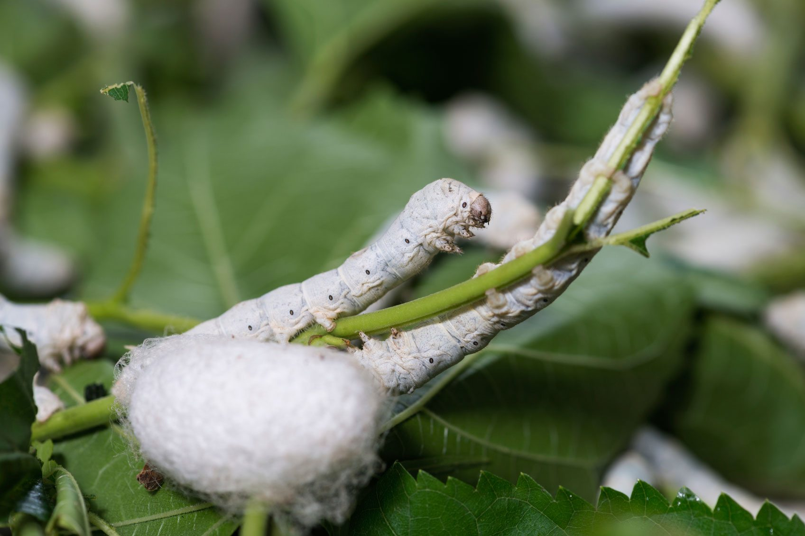
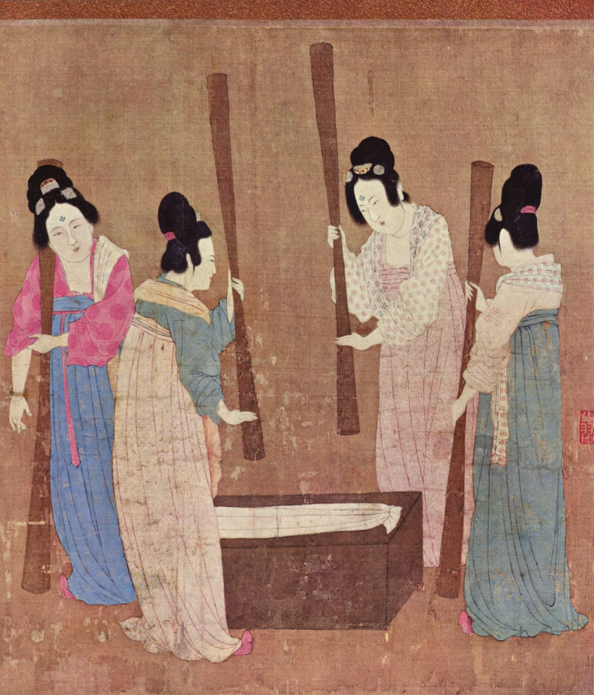

This is the layout to Allegra’s Silks online boutique we sell limited amounts of top-quality silk dresses, silk tops and silk pants. We were founded in 2021 in NYC, as a solution to all your cute silk wardrobe needs.
 Learn about silk! “Silk, animal fibre produced by certain insects and arachnids as building material for cocoons and webs, some of which can be used to make fine fabrics. In commercial use, silk is almost entirely limited to filaments from the cocoons of domesticated silkworms (caterpillars of several moth species belonging to the genus Bombyx).” – Britannica
 Silk origins! “The origin of silk production and weaving is ancient and clouded in legend. The industry undoubtedly began in China, where, according to native record, it existed from sometime before the middle of the 3rd millennium BCE. At that time it was discovered that the roughly 1 km (1,000 yards) of thread that constitutes the cocoon of the silkworm could be reeled off, spun, and woven, and sericulture early became an important feature of the Chinese rural economy. A Chinese legend says that it was the wife of the mythological Yellow Emperor, Huangdi, who taught the Chinese people the art; throughout history the empress was ceremonially associated with sericulture. The weaving of damask probably existed in the Shang dynasty, and the tombs of the 4th–3rd centuries BCE at Mashan near Jiangling (Hubei province), excavated in 1982, have provided outstanding examples of brocade, gauze, and embroidery with pictorial designs as well as the first complete garments.” – Britannica